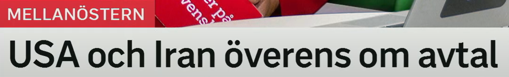
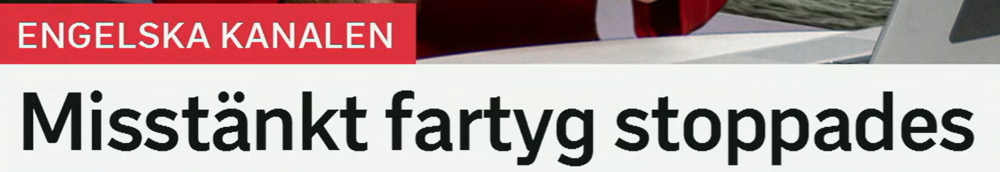
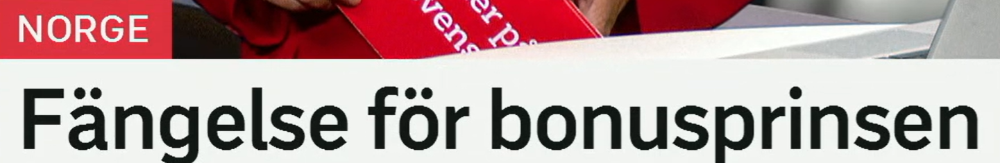
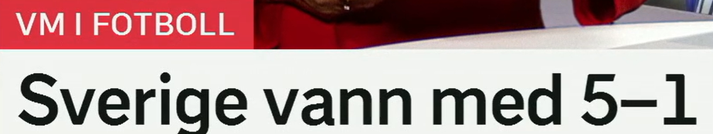

USA och Iran överens om avtal
美国和伊朗就协议达成一致。
vara överens 表示意见一致、达成一致。常和 om 搭配：vara överens om något 就某事达成一致。
近义表达：eniga 一致的，komma överens 达成一致，nå samsyn 达成共识，enas om 就……统一意见。
Parterna är överens om villkoren. 各方就条件达成一致。
ett avtal 协议、合同。常见动词：sluta avtal 达成协议，skriva under avtal 签署协议，bryta avtal 违反协议。
近义词：överenskommelse 协议/共识，uppgörelse 协议安排，kontrakt 合同，fredsavtal 和平协议。
Ett nytt avtal kan bli klart i dag. 一项新协议可能今天完成。
om 在这里表示“关于、就……”。高频搭配：avtal om 关于……的协议，möte om 关于……的会议，beslut om 关于……的决定。
De förhandlar om ett avtal. 他们就协议进行谈判。
外交标题句型
A och B överens om X 省略了 är：A och B är överens om X.

Misstänkt fartyg stoppades
一艘可疑船只被拦停。
misstänkt 可以表示“可疑的、疑似的”，也可以作名词“嫌疑人”。动词是 misstänka 怀疑。
近义词：misstänksam 可疑的/多疑的，oklar 不明的，möjlig 可能的，påstådd 所谓的。
Polisen hittade ett misstänkt föremål. 警方发现一个可疑物体。
ett fartyg 船舶、舰船，比 båt 更正式。复数也常是 fartyg。
相关词：båt 船，skepp 船/舰，lastfartyg 货船，passagerarfartyg 客船，kustbevakning 海岸警卫队。
Fartyget var på väg genom kanalen. 船正经过海峡。
原形 stoppa 停止、阻止、拦停；stoppades = 被拦停/被阻止。
近义词：hejdades 被阻止，kontrollerades 被检查，greps 被抓获，beslagtogs 被扣押。
Bilen stoppades av polis. 汽车被警方拦停。
被动标题
Misstänkt X stoppades = 可疑的 X 被拦停。完整句可写：Ett misstänkt fartyg stoppades.

Fängelse för bonusprinsen
继王子/王室继子被判监禁。
ett fängelse 监狱；在司法标题中也常指监禁刑。
相关词：fängelsestraff 监禁刑，straff 惩罚，dom 判决，döms till fängelse 被判入狱。
Mannen döms till fängelse. 该男子被判入狱。
这里 för 可理解为“给予/针对”。在司法标题中，fängelse för X 常等于“X 被判监禁”。
Det blev böter för företaget. 该公司被罚款。
bonus- 在瑞典语家庭关系中常表示“继/再婚家庭中的”。en prins 王子；bonusprinsen 可理解为“继王子/王室继子”这一称呼。
相关词：bonusfamilj 重组家庭，bonusson 继子，kungafamiljen 王室，prins 王子。
Bonusfamilj är ett vanligt ord i Sverige. “重组家庭”在瑞典语中是常见词。
司法结果标题
Fängelse för X 是很压缩的标题，完整可说：X döms till fängelse.

Sverige vann med 5-1
瑞典以 5 比 1 获胜。
原形 vinna 赢、获胜；过去式 vann，完成式 vunnit。
近义词：segra 获胜，ta seger 取得胜利，besegra 击败，gå segrande ur 胜出。
Sverige vann matchen. 瑞典赢了比赛。
vinna med + 比分，表示“以……比分获胜”。5-1 读作 fem ett，也可说 fem mot ett。
相关表达：slutresultat 最终比分，ledning 领先，mål 进球，förlust 失利。
Laget vann med 2-0. 这支队伍以 2 比 0 获胜。
VM 是 världsmästerskap 的缩写，世界杯/世锦赛。fotboll 足球。
相关词：match 比赛，turnering 锦标赛，landslag 国家队，målskytt 进球者。
体育标题句型
Lag vann med X-Y = 某队以 X 比 Y 获胜。若输球可说：förlorade med X-Y。
复习表：重点词 + 近义词 + 高频用法
| 关键词 | 近义/相关词 | 高频搭配 |
|---|---|---|
| överens | eniga, komma överens, enas om, nå samsyn | överens om avtal, vara överens, komma överens med |
| avtal | överenskommelse, uppgörelse, kontrakt, fredsavtal | sluta avtal, skriva under avtal, avtal om vapenvila |
| misstänkt | oklar, möjlig, påstådd, misstänksam | misstänkt fartyg, misstänkt person, misstänkt för brott |
| stoppades | hejdades, kontrollerades, greps, beslagtogs | stoppades av polis, stoppades i kanalen, fartyg stoppades |
| fängelse | fängelsestraff, straff, dom, frihetsberövande | döms till fängelse, fängelse för, inget fängelse |
| vinna | segra, besegra, ta seger, gå segrande ur | vann med 5-1, vinna matchen, vann finalen |
练习 1
把“双方就协议达成一致”译成瑞典语。提示：Parterna är överens om ett avtal.
练习 2
说“一艘可疑船只被拦停”。提示：Ett misstänkt fartyg stoppades.
练习 3
把“该男子被判入狱”译成瑞典语。提示：Mannen döms till fängelse.
练习 4
说“瑞典以 2 比 0 获胜”。提示：Sverige vann med 2-0.